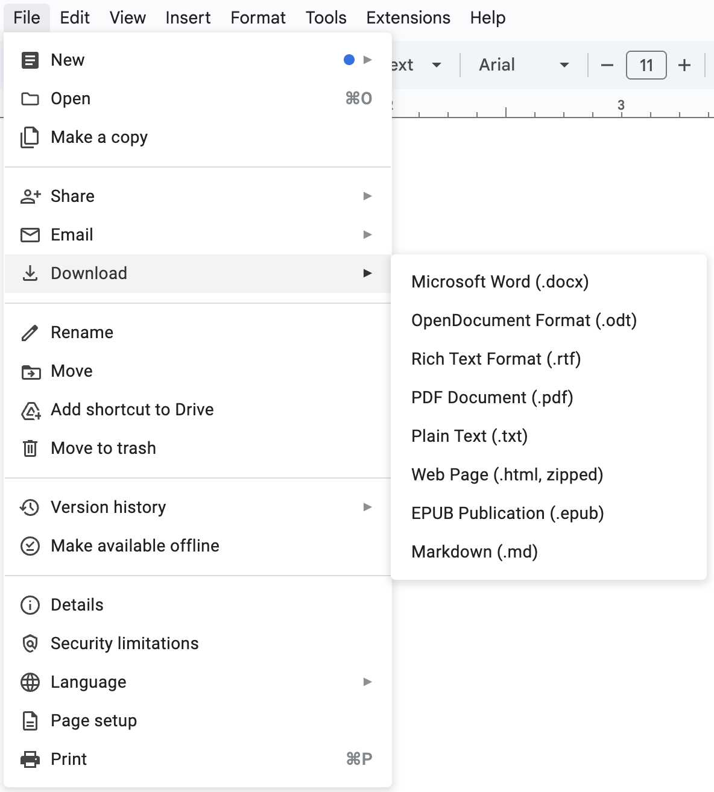
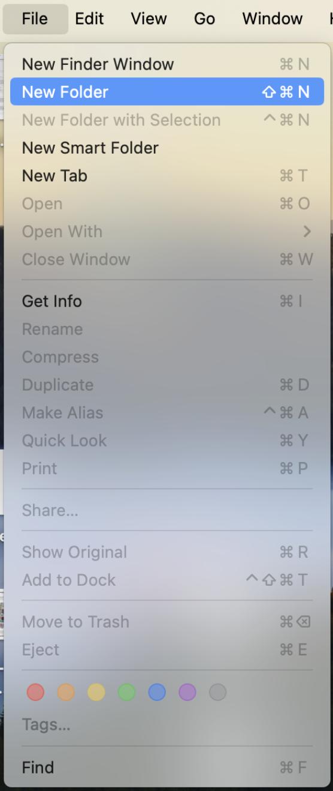
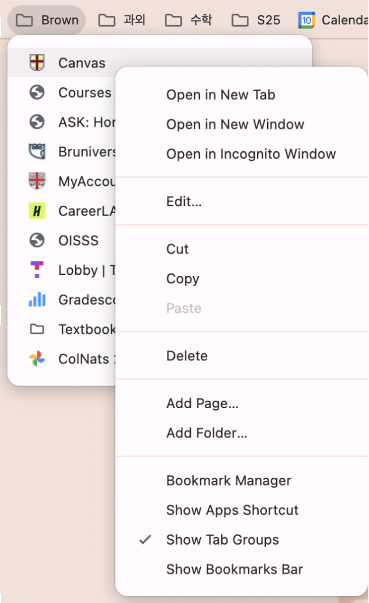
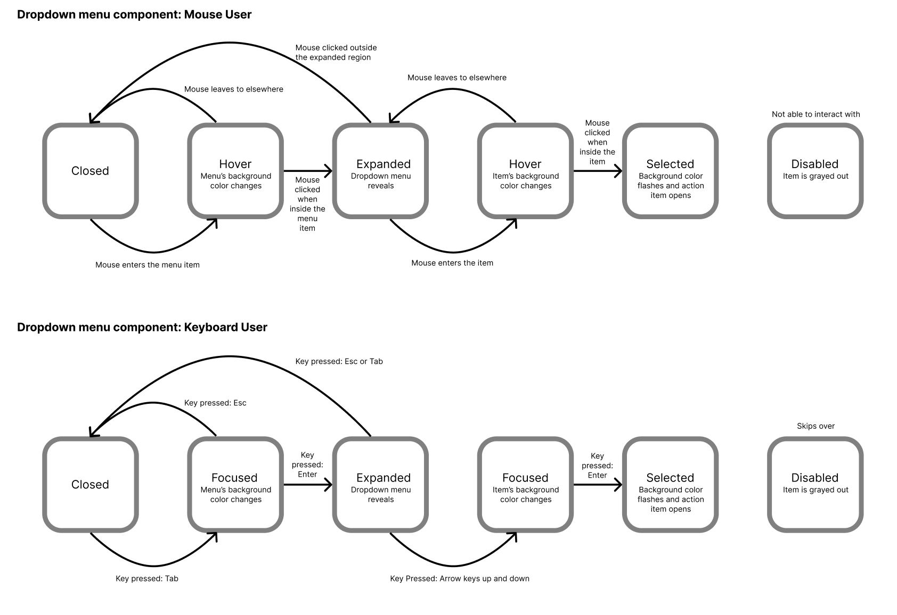
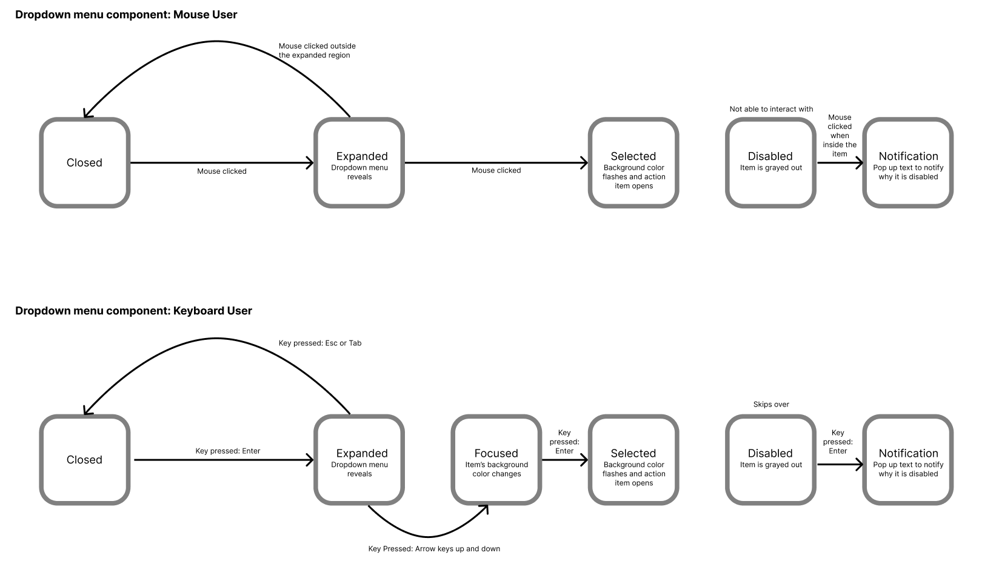

Improving the usability and inclusivity of dropdown menus across interfaces.
Team
Solo Project – CSCI1300
Timeline
2 weeks, February 2025
Skills
Dropdown menus seem simple—until they aren’t. While they’re a core part of nearly every interface, their accessibility is often treated as an afterthought. This project was my chance to rethink that. I examined dropdown behavior across multiple platforms and redesigned the component to prioritize users who navigate the web differently—whether due to vision, mobility, or interaction preferences. My goal wasn’t just to refine UI mechanics, but to ensure that no user feels like an afterthought.
I started by analyzing dropdown menus in Google Docs, Finder, and Google Bookmarks. Each platform handled interaction differently—especially when it came to input methods like keyboard or touch. These comparisons helped me understand the subtle design choices that make—or break—accessibility.
Google Docs
Finder
Google Bookmarks
Here’s how each handled input across devices:
| Google Docs | Finder | Google Bookmarks | |
|---|---|---|---|
| Mouse | Robust, responsive hover states and clear item hierarchy. | Minimal feedback—functional, but barebones. | Good drag support, but lacks precision for longer menus. |
| Keyboard | Supports shortcuts and navigation, but requires multiple key combos. | Technically usable, but hard to access menus initially. | Follows Finder's lead—functional but discoverability is low. |
| Touch | Tap-to-open works well; scrollable menus are fluid. | Not optimized for touch interfaces. | |
Mouse and touch were clearly prioritized in all three examples. Keyboard input, while supported, often felt like a patch—rather than a core part of the experience.
I next explored how feedback was communicated. What happens when a user interacts with a dropdown? Can they tell what’s happening? Can a screen reader follow?
| Google Docs | Finder | Google Bookmarks | |
|---|---|---|---|
| Visual | Hover colors, dropdown arrows, and bold text indicate states well. | Consistent selection cues but less visually descriptive. | Lightweight design works, but hover states can feel subtle. |
| Screen Reader | Thorough but verbose—announces all items and states. | Reads command keys and labels clearly. | Simplified output—useful but lacks context cues. |
| Focus Order | Logical, but easy to exit unintentionally with Tab. | Cycle-friendly, though not always obvious. | Focus retention was inconsistent. |
Even with visual cues in place, screen reader and keyboard users had a harder time receiving feedback. Text alternatives were minimal, and affordances weren’t always coded clearly.
Armed with insights, I created a state model to map user paths across inputs. This helped me identify moments of friction—especially around keyboard navigation and voiceover consistency.
I also tested a tradeoff design—removing hover states to simplify screen reader interpretation. While it clarified screen reader output, it sacrificed a key visual cue. The result? A deeper appreciation for the balance designers must strike between clarity and context.
The final design integrated:
This project shifted how I think about components. A dropdown isn’t just a menu—it’s a decision point, an input field, and a space for inclusion. Kat Holmes’ concept of “solving for mismatch” stayed with me throughout. When we design for edge cases, we often make the experience better for everyone.
I’m proud of how the final component balances discoverability and accessibility. Keyboard-only users can navigate with ease. Screen reader users get clear state updates. And visual users still benefit from intuitive cues and clean design.
Designing for accessibility isn’t about extra features—it’s about being intentional. And that mindset is something I’ll carry forward into every project I touch.